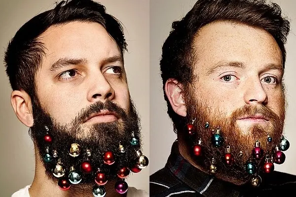
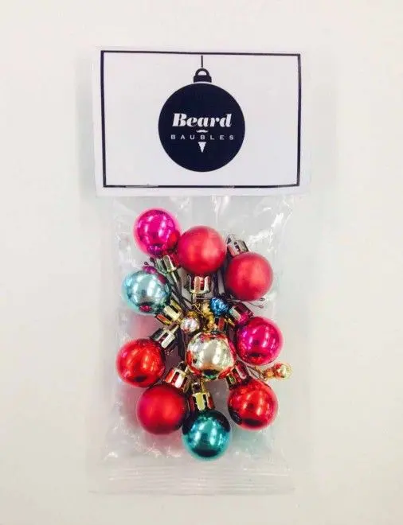

Tendenza -beard baubbles
Sapete che di tanto in tanto, ogni occasione è buona per nuove cose,nuove tendenze. . Quella del momento è tutta dedicata all'uomo. .
Proprio così, maschietti che non avete voglia di radervi questa è una scusa Buona ihih
Vero è un buon rimedio per questo Natale per chi ha voglia di tenersi la barba. .
Parliamo del 'beard baubbles'. .
Questa tendenza consiste nel decorare la barba con palline di natale. .

Se volete stupire familiare e amici quest'anno abbellite anche voi i peli del vostro viso. .se non altro sarà un modo sfizioso di passare le feste in allegria. .
Immaginate la faccia di chi vi vede ahahah
Un pò di risate. .
Se poi si vuole pensare al fine di questa iniziativa. .
Infatti il fine ultimo di questa tendenza è davvero notevole.I kit di beard baubbles, sono venduti on line ad un prezzo a partire da 5 sterline e il ricavato sarà devoluto in beneficienza all’associazione Beard Season che si occupa della cura e della prevenzione del melanoma.

Inizialmente si trattava di una trovata pubblicitaria per una campagna, ma dalla diffusione delle immagini di uomini con la barba decorata in tema natalizio è scoppiata una vera e propria moda, tanto che a Londra, in America e in Australi è un vero boom.Perfetto dunque per chi ama stare al centro dell'attenzione. .e perchè no, se è anche per un nobile fine allora ragazzuoli potete sbizzarrirvi.